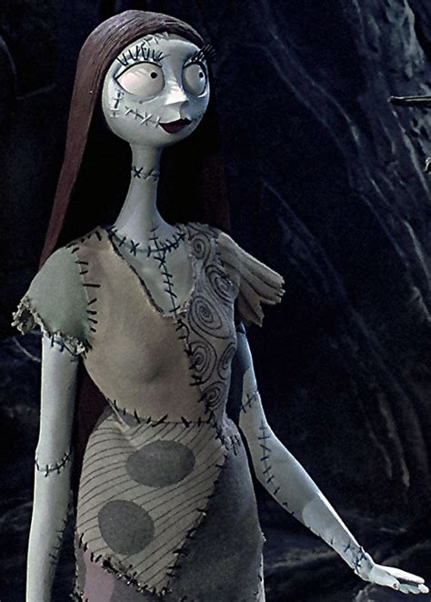

Main Characters
Jack Skellington
Jack is the Pumpkin King of Halloween Town, a charismatic and beloved leader who excels at planning Halloween every year. However, despite his success, Jack feels unfulfilled and yearns for something more than his repetitive life. Upon discovering Christmas Town, Jack becomes mesmerized by its joyful spirit and decides to take over Christmas, though his efforts lead to unintended consequences. Jack's journey throughout the film is one of self-discovery, as he ultimately realizes that he is happiest being who he truly is-the Pumpkin King. His dynamic personality and iconic appearance have made him one of the most memorable characters in film history.

Sally
Sally is a rag doll created by the mad scientist Dr. Finkelstein. She is kind-hearted, intelligent, and resourceful, often helping Jack through difficult situations. Sally quietly harbors feelings for Jack and frequently tries to warn him about the dangers of his plan to take over Christmas. Though she appears fragile, Sally proves to be strong and determined, escaping from Dr. Finkelstein's control and finding her own voice. Her character adds emotional depth to the story and ultimately becomes Jack's love interest, balancing his larger-than-life personality with her quiet wisdom and compassion.
